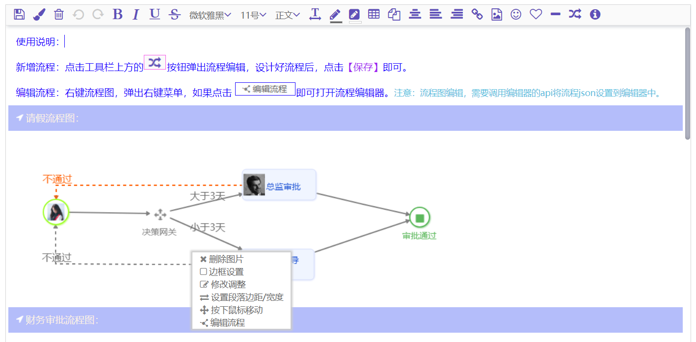
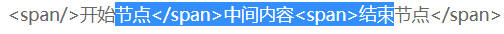
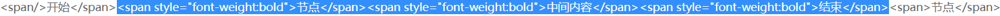
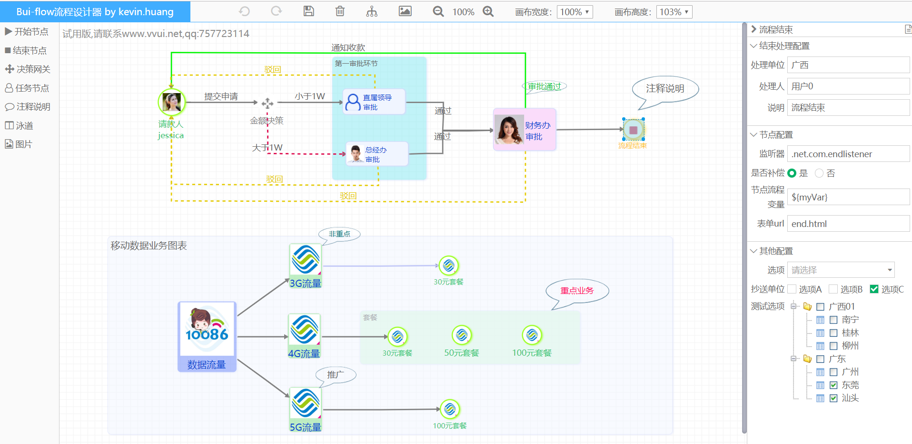

文章开始前先上个图：

大话富文本技术概要：
在web领域，一提到富文本，大伙都觉得很高深，很难，很复杂。但是如果你看了我这篇简短的技术分析，你会发现其实富文本不算高深，称不上很难，只是比较复杂，需要用点心，折腾几回你也能做一个富文本编辑器。下面我将采用“问题+答疑”方式聊聊web端富文本。
问题一、富文本是怎么形成的？
有网友在切换【源码】状态下看到一大堆html + css修饰时，竟然向我提问：“怎么是这样的一堆东西？”。网友很惊讶，我也很惊讶。作为一个web开发者，写不了富文本，那也不至于不了解web富文本的构成吧！所以我觉得有必要声明一下这个基础知识：web富文本是由html标签 + css修饰形成的 ！君不信，可以去翻看ueditor、tinyMCE、kingEditor等等富文本编辑器。
问题二、富文本既然是html + css修饰形成的，那怎么做才能根据用户操作进行修饰呢？
回答这个问题，需要从两方面来解析：
1、JavaScript脚本是如何知道用户光标所在的选区？
答案：range对象。
每个浏览器中的window对象之下都存在一个range对象。range对象存放着当前光标所在的选区信息。现代浏览器(IE10、chrome、firefox)对range的支持都很良好，如果是旧版本的ie浏览器，range对象的获取，其内部的某些api可能有不同的差异，需要做兼容性处理。根据range对象获得选区信息是开发者操控选区html内容的第一个步骤。
2、得到了选区后，如何进行css修饰，比如修饰color=“red”？
这可以说是富文本技术实现的麻烦之处(难点)。玩过富文本技术的同学，肯定会想到“document.execCommand()”这个大名鼎鼎的对象。目前市面上的富文本基本都是基于这个对象打造。比如对选区执行一个加粗修饰，你可以直接调用“document.execCommand('bold')”。该API会将用户选择的文本都加上一个"strong"标签。
然而，document.execCommand不是万能的，比如不支持插入文件、视频，行高、边距修饰等。所以基于这个api的富文本都必须扩展execCommand接口。execCommand除了支持有限外，还有个很令人不爽的地方，其执行的修饰并不符合web规范的要求，比如加粗采用“strong”标签，而不是css修饰里的“font-weight:bold”，而且多次修饰操作会产生N层嵌套。基于execCommand打造的富文本可以说没有规律而言。其输出的html内容，不适用于后端转word、pdf等需求场景。
问题三、execCommand是富文本技术的核心，但也是周身缺点，请问有何良方？
良方：依靠range，提取用户选择的文本，将文本采用span标签包装，然后采用标准的css对span标签进行修饰！
问题四、良方思想很好，实现上有什么难点吗？
难点肯定有，而且需要一些巧妙的设计及实现。
1、选区丢失问题
选区丢失问题，execCommand方案同样存在。表现为：用户划选了选区，当点击修饰按钮时候，由于浏览器的鼠标焦点机制，选区丢失了，造成点击事件的修饰功能找不到选区。
解决办法：利用编辑器区域的mouseleave，修饰按钮的mousedown、mouseup组合应用对选区进行暂存和恢复。
2、span标签组装问题
span标签组装？是什么意思呢？请看下面一个选区demo，用户划选的内容是跨元素节点的复杂选区。

用户划选的区域，覆盖了前后两个span、中间一个纯文本。根据修饰需求，需要对 “节点中间内容结束” 这个划选的内容进行加粗。那么需要将上述选区转为span包装后利用css修饰：

从上述demo，可以看出用户划选的内容可能是一个标签内的，也可能是跨多个标签而形成的。开发者需要编写一个算法将划选内容提取组装为多个span水平包装的结构。
3、span水平包装算法实现要点
根据range对象的collapsed属性判断是否是跨标签选区。
1）非跨标签选区：根据range.startOffset、range.endOffset拆分内容形成一个数组，然后对每个数组的内容进行span包装。
2）跨标签选区：根据range.startContainer、range.endContainer、range.startOffset、range.endOffset，将内容进行拆分，并将拆分后的内容进行span包装。
4、span包装引起的选区丢失恢复问题
在span包装的算法中，由于需要对dom节点进行删除、插入，会引起选区丢失。故需要在进行span组装前，将当期选区的信息暂存起来，组装好span后，根据暂存信息进行选区恢复。
算法思想总结
1、利用range对象获取用户选区信息。
2、根据range信息，将用户选择的内容进行拆分组合，形成水平结构的span包装。
3、上述算法中，由于焦点变化，dom删除插入的影响，存在选区丢失的问题，需要将选区信息暂存，并在适当时候恢复选区。
特色功能设计实现思想
在bui-editor富文本中，提供了比较有特色的 “浮动文本、图片”，左右边距拖动调整，流程图绘制等特色功能。下面介绍一下这些特色功能的实现。
浮动文本/图片功能
1.web开发者都知道，html的浮动是利用position:absolute来实现的，absolute要求父元素是relatvie或者absulote。bui-editor同样是利用这个技术点来实现浮动文本/图片需求。
2.bui-editor中会将编辑区域用一个声明了relative的div进行包装，在这个包装div之下，是存放段落的div和浮动的div，这样从结构设计上满足段落的流式布局，又满足了浮动的需求。
3.编辑区域内既然已经存在了流式段落div和浮动div，那么需要对这两种不同的div内容分别做处理。
左右边距拖动调整功能
边距拖动：利用range选区提取当前覆盖的段落，通过拖动两边的边线，调整段落的margin-left、width进行实现段落左右边距的调整。
流程图绘制功能
流程图功能：利用bui-flow设计器绘制好流程，通过canvas技术导出base64位的图片数据，然后插入到富文本中。富文本中将流程图的json数据保存起来并实现流程图的可编辑。
富文本结构设计
目前市面上的富文本几乎都是利用execCommand api来实现，这个api输出的富文本html结构是混乱的（标签不规范、N层嵌套、非css修饰）。这样的富文本结构限制了富文本应用的后端扩展，难以实现word、pdf的转换。为此，bui-editor对富文本的输出结构做了规范化的定义：
1、段落结构采用div标签，为什么不采用p标签呢？p标签是一个内容标签，而我们的段落内还存在table(表格)，采用p标签不符合w3c规范了。
2、段落内采用水平化的span子标签，利用span子标签包装内容，这样便于将修饰设置到span标签上，同时水平化的结构避免了嵌套的问题。
3、段落div内除了span子标签，还存在table标签、image标签、pre代码块标签的可能性。
4、table单元格内采用p标签作为单元格内的基本输入单位，这样可以解决单元格内回车换行的需求。
技术要点总结：
1、掌握range对象
2、理解选区丢失的场景、原因，及其对应策略
2、实现span拆分包装算法
4、设计好富文本的html结构，抛弃execCommand Api
我相信，如果你对上述要点都有了理解，只要你愿意多动几次手，开发富文本不是个很难的事情。
欢迎访问项目： https://gitee.com/kevin-huang/Bui-Editor-public
欢迎访问我正在开发的流程设计器demo ： http://www.vvui.net/flow/index.html
